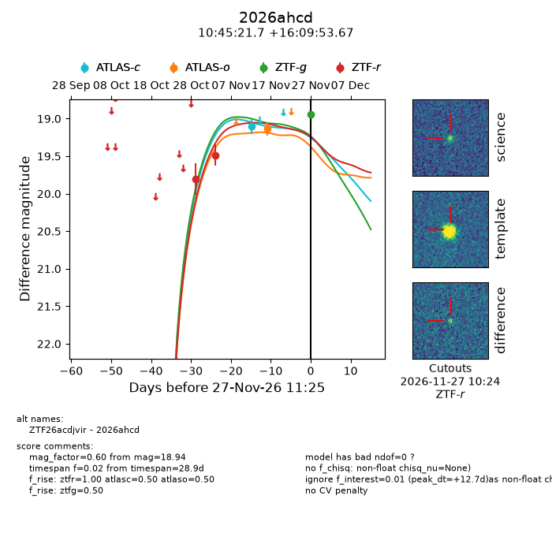
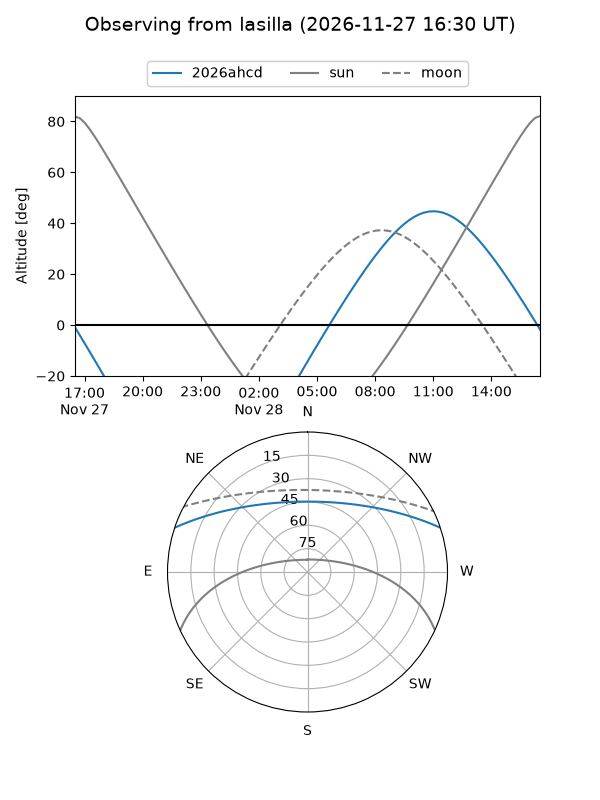
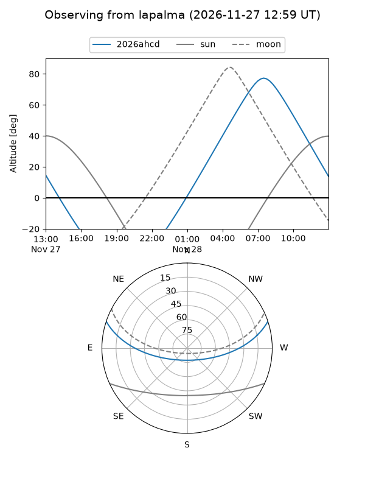
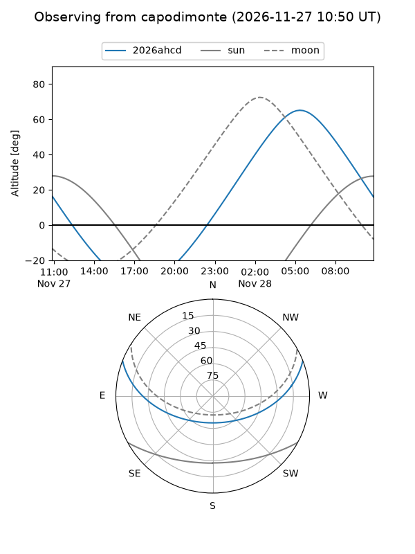
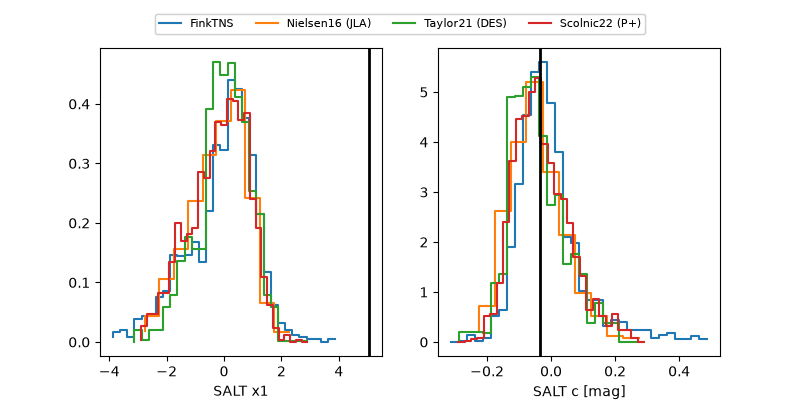

2026ahcd
Target 2026ahcd at 2026-11-27 11:26
Aliases and brokers:
FINK-ZTF: ztf.fink-portal.org/ZTF26acdjvir
Lasair-ZTF: lasair-ztf.lsst.ac.uk/objects/ZTF26acdjvir
ALeRCE-ZTF: alerce.online/object/ZTF26acdjvir
YSE-PZ: ziggy.ucolick.org/yse/transient_detail/2026ahcd
TNS name: wis-tns.org/object/2026ahcd
Direct TNS query: direct search
alt names
ZTF26acdjvir (ztf,fink_ztf)
2026ahcd (tns,yse)
Coordinates:
equatorial (ra, dec) = 161.3406,+16.16491
equatorial (HMS+DMS) = 10:45:21.75,+16:09:53.67
galactic (l, b) = (226.9725,+58.83035)
Flags:
peak dt: +12.7
Photometry:
last atlasc=19.11, atlaso=19.13, ztfg=18.94, ztfr=19.49
1 atlasc, 1 atlaso, 1 ztfg, 2 ztfr detections
Lightcurve

Visibility



Additional plots
